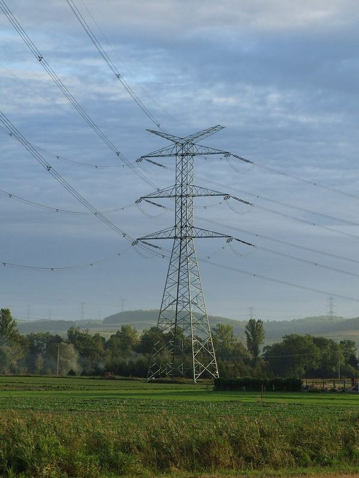
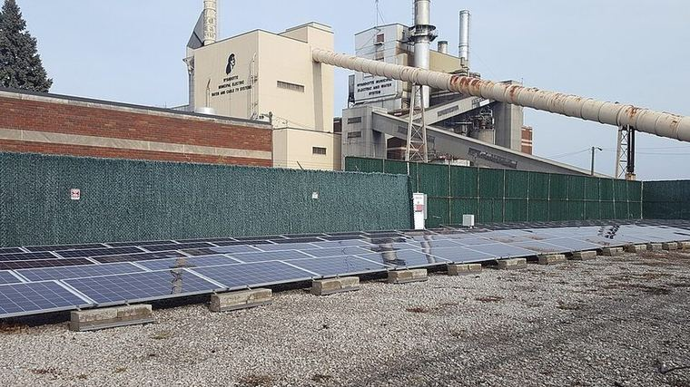

Modul 03 · Pengantar Rekayasa dan Desain
Materi ini membahas definisi rekayasa menurut kriteria akreditasi, perbedaan sains dan rekayasa, siklus hidup sistem, kebutuhan sampai spesifikasi, batasan, trade-off, proses iteratif, V-model, sistem thinking, etika profesi, kedudukan Teknik Elektro, serta smart grid, IoT, cyber-physical system, keberlanjutan, dan e-waste.
Rekayasa adalah kegiatan menerapkan ilmu pengetahuan untuk menghasilkan solusi yang dapat dipakai manusia. Contohnya, ketika seorang penghuni mengeluh bahwa sebuah ruangan terlalu panas, kebutuhan itu belum cukup untuk memulai desain. Insinyur harus mengubahnya menjadi requirement yang dapat diukur, memilih alternatif, menguji, dan memperbaikinya.
Kebutuhan manusia
|
Masalah
|
Analisis kebutuhan
|
Requirement dan specification
|
Constraint
|
Alternatif desain
|
Analisis dan simulasi
|
Prototipe
|
Pengujian
|
Evaluasi dan perbaikan
|
ImplementasiAbet mendefinisikan engineering design sebagai proses membuat sistem, komponen, atau proses untuk memenuhi kebutuhan dan spesifikasi tertentu dalam batas-batas yang ada. Modul ini mengikuti urutan tersebut, lalu menutupnya dengan isu profesi, etika, dan dampak sosial yang menentukan apakah sebuah solusi benar-benar layak.
ABET memakai definisi berikut untuk engineering design: a process of devising a system, component, or process to meet desired needs and specifications within constraints. Definisi ini menegaskan empat hal: ada kebutuhan, ada spesifikasi yang dituju, ada batasan, dan prosesnya iteratif serta kreatif.
Contoh batasan menurut definisi ABET
Aesthetics, codes, constructability, cost, ergonomics, extensibility, functionality, interoperability, legal considerations, maintainability, manufacturability, marketability, policy, regulations, schedule, standards, sustainability, dan usability.
| No | Capaian |
|---|---|
| 1 | Mengidentifikasi, merumuskan, dan menyelesaikan masalah rekayasa kompleks dengan menerapkan prinsip rekayasa, sains, dan matematika |
| 2 | Menerapkan engineering design untuk menghasilkan solusi yang memenuhi kebutuhan tertentu dengan mempertimbangkan kesehatan masyarakat, keselamatan, dan kesejahteraan, serta faktor global, budaya, sosial, lingkungan, dan ekonomi |
| 3 | Berkomunikasi secara efektif dengan berbagai khalayak |
| 4 | Mengenali tanggung jawab etis dan profesional dengan mempertimbangkan dampak solusi rekayasa dalam konteks global, ekonomi, lingkungan, dan masyarakat |
| 5 | Bekerja efektif dalam tim |
| 6 | Merancang dan melakukan eksperimen, menganalisis serta menafsirkan data, dan menggunakan pertimbangan rekayasa |
| 7 | Memperoleh dan menerapkan pengetahuan baru sesuai kebutuhan |
Koreksi yang perlu diketahui
Daftar capaian huruf a sampai k yang sering dikutip dalam materi lama sudah tidak dipakai. Kriteria 2026–2027 memakai nomor 1 sampai 7, dengan desain pada capaian 2 dan etika pada capaian 4. Keberlanjutan bukan capaian tersendiri, melainkan melekat pada capaian 2 dan pada daftar batasan di atas.
ABET menetapkan siklus akreditasi enam tahun. Kriteria 5 ayat 4 mensyaratkan adanya pengalaman desain utama yang mengintegrasikan standar rekayasa dan beberapa batasan, serta bertumpu pada pengetahuan dan keterampilan dari mata kuliah sebelumnya. Dalam konteks Indonesia, akreditasi program studi teknik dilakukan oleh Lembaga Akreditasi Mandiri Teknik dengan masa berlaku lima tahun.
| Aspek | Ilmu pengetahuan | Rekayasa |
|---|---|---|
| Pertanyaan | Bagaimana dan mengapa fenomena terjadi | Bagaimana kebutuhan dipenuhi |
| Tujuan | Mengembangkan pemahaman | Menghasilkan solusi |
| Hasil | Teori, model, data | Produk, sistem, proses, metode |
| Pendekatan | Observasi, eksperimen, pemodelan | Desain, analisis, sintesis, implementasi, pengujian |
| Ukuran keberhasilan | Ketepatan penjelasan dan prediksi | Pemenuhan kebutuhan dalam batas yang ada |
Hubungan keduanya bersifat dua arah. Sains menemukan prinsip elektromagnetisme, lalu rekayasa memakainya untuk membuat motor, generator, transformator, dan pengeras suara. Sebaliknya, instrumen yang dirancang insinyur memungkinkan ilmuwan memperoleh data yang tidak mungkin sebelumnya.
ISO/IEC/IEEE 15288 Edisi 2 yang terbit pada Mei 2023 menyediakan kerangka umum untuk menjelaskan proses pada siklus hidup sistem. Standar ini tidak memaksakan model siklus hidup tertentu, tetapi membagi proses ke dalam empat kelompok.
| Kelompok | Isi |
|---|---|
| Agreement | Pengadaan dan suplai |
| Organizational project-enabling | Pengelolaan model siklus hidup, infrastruktur, dan portofolio |
| Technical management | Pengelolaan teknis, termasuk risiko dan pelacakan |
| Technical | Konsep operasi, kebutuhan, definisi requirement sistem, arsitektur, definisi desain, analisis, realisasi, verifikasi sistem, dan validasi sistem |
Berurutan proses teknis dari definisi requirement sampai validasi membentuk rantai yang tidak boleh dilompati. Kebutuhan pemangku kepentingan menjadi system requirements, lalu menjadi design definition, baru kemudian dierealisasikan dan diverifikasi.
Konsep operasi
|
Kebutuhan pemangku kepentingan
|
Definisi requirement sistem
|
Definisi arsitektur sistem
|
Definisi desain
|
Realisasi
|
Verifikasi sistem
|
Validasi sistemEmpat istilah berikut sering tertukar, tetapi berbeda.
| Istilah | Pengertian | Contoh pada lampu otomatis |
|---|---|---|
| Requirement | Kebutuhan atau fungsi yang harus dipenuhi | Lampu menyala otomatis saat ruangan gelap dan digunakan |
| Specification | Requirement yang dinyatakan sebagai parameter terukur | Menyala saat intensitas cahaya di bawah 100 lux, waktu tanggap kurang dari 1 detik |
| Constraint | Batasan yang tidak boleh dilanggar | Anggaran maksimal Rp150.000, operasi 10 sampai 40 derajat Celsius |
| Trade-off | Kompromi ketika dua tujuan saling berlawanan | Menaikkan sensitivitas sensor menambah noise |
ISO/IEC/IEEE 29148 Edisi 2 tahun 2018 mengelompokkan requirement menjadi stakeholder requirements, system requirements yang terbagi menjadi fungsional, performansi, antarmuka, batasan, serta atribut kualitas, lalu diterjemahkannya menjadi design constraints dan design definition. Requirement yang baik memiliki sembilan ciri berikut.
| Ciri | Arti | Contoh requirement yang gagal |
|---|---|---|
| Necessary | Dibutuhkan | Fitur log aplikasi untuk printer 3D |
| Implementation-free | Tidak mengunci solusi teknis | Gunakan sensor LDR, bukan sensor fotodioda |
| Unambiguous | Hanya punya satu makna | Sistem harus mudah digunakan |
| Complete | Tidak ada kondisi yang terlewat | Sensor harus bekerja pada semua kondisi tanpa pengecualian |
| Consistent | Tidak bertentangan dengan requirement lain | Dua requirement mengharuskan konflik daya |
| Singular | Satu requirement satu ide | Sensor cepat dan murah dalam satu kalimat |
| Feasible | Dapat direalisasikan | Baterai cukup untuk dua tahun dengan jarak tempuh 400 km |
| Verifiable | Dapat diuji | Antarmuka harus intuitif |
| Traceable | Dapat ditelusuri ke asalnya | Requirement tanpa sumber kebutuhan |
Contoh hitung 1 · Menubah kebutuhan menjadi spesifikasi terukur
Kebutuhan: lampu harus hemat energi.
Spesifikasi yang dapat diuji:
Sumber daya : 5 V DC ±5 %
Daya maksimum : 5 W
Ambang cahya : menyala di bawah 100 lux
Waktu tanggap : < 1 detik
Rentang suhu : 10 sampai 40 derajat C
Anggaran komponen : maksimal Rp150.000
Umur operasi : minimal 10.000 jam
Akses konduktor : tidak ada bagian bertegangan yang dapat dijangkau pengguna| Jenis | Contoh | Cara memverifikasi |
|---|---|---|
| Kinerja | Akurasi sensor temperatur ±1 derajat C | Perbandingan dengan termometer acuan |
| Energi | Baterai 1.000 mAh | Perhitungan arus dan pengukuran runtime |
| Biaya | Prototipe maksimal Rp500.000 | Rekap manufaktur dan pembelian |
| Waktu | Prototipe selesai dalam 4 minggu | Rencana kerja dan pelaporan kemajuan |
| Fisik | Ukuran maksimal 10 × 10 × 5 cm | Pengukuran pada cetakan |
| Keselamatan | Casing melindungi pengguna dari bagian bertegangan | Uji akses dan uji ketahanan |
| Lingkungan | Konsumsi daya rendah dan komponen dapat didaur ulang | Analisis siklus hidup |
| Sosial | Aplikasi tetap berfungsi pada smartphone lama | Uji pada perangkat minimum |
| Etika dan hukum | Data pribadi direkam hanya atas persetujuan | Peninjauan kebijakan privasi |
Biaya juga perlu dipandang sebagai biaya siklus hidup, bukan hanya harga komponen. ASQ mengelompokkan biaya kualitas yang rendah dalam empat kategori.
| Kategori | Pengertian | Contoh |
|---|---|---|
| Pencegahan | Menghindari masalah sejak awal | Spesifikasi, perencanaan mutu, pelatihan |
| Penilaian | Mendeteksi masalah | Pemeriksaan masuk, audit, penilaian pemasok |
| Kegagalan internal | Ditemukan sebelum pengiriman | Scrap, pengerjaan ulang, analisis kegagalan |
| Kegagalan eksternal | Ditemukan pengguna | Garansi, penarikan produk, recall, tanggung jawab hukum |
Contoh hitung 2 · Menghitung runtime baterai
Baterai 1.000 mAh, sistem mengonsumsi 45 mA rata-rata. Kapasitas terpakai 80 persen karena usia dan suhu.
Arus tersedia = 1.000 mAh * 0,8 = 800 mAh
Runtime = 800 mAh / 45 mA = 17,8 jam
Jika ada Wi-Fi yang selalu aktif dengan tambahan 25 mA:
Arus total = 45 + 25 = 70 mA
Runtime = 800 / 70 = 11,4 jam
Penurunan runtime = (17,8 - 11,4) / 17,8 = 35,9 %Kesimpulannya: menentukan kapan radio aktif sering lebih berpengaruh daripada memilih komponen yang lebih hemat.
Trade-off muncul ketika meningkatkan satu tujuan mengurangi tujuan lain. Pada kendaraan listrik, kapasitas baterai yang lebih besar memperpanjang jarak tempuh tetapi menambah berat, volume, dan biaya.
Contoh hitung 3 · Trade-off baterai dan energi
Motor listrik 15 kW, baterai 400 V. Rata-rata beban 20 persen, kecepatan 60 km/jam.
Daya rata-rata = 15 kW * 0,20 = 3 kW
Arus rata-rata = 3 000 W / 400 V = 7,5 A
Energi per km = 3 kW / 60 km/jam = 0,05 kWh/km
Baterai 30 kWh -> jarak ideal = 30 / 0,05 = 600 km
Baterai 60 kWh -> jarak ideal = 60 / 0,05 = 1 200 km
Dengan efektivitas 90 persen:
Baterai 30 kWh -> 540 km
Baterai 60 kWh -> 1 080 km
Kenaikan kapasitas 100 % memberi kenaikan jarak 100 %,
tetapi massa baterai naik dua kali lipat.Contoh kedua adalah komponen sensor. Sensor akurasi 0,01 derajat C dan sensor 0,1 derajat C tidak dapat dipilih hanya dari angka akurasi. Untuk alat medis diperlukan ketelitian tinggi dan kalibrasi, sedangkan untuk monitor suhu ruang cukup membedakan 25 dan 30 derajat C.
Masalah rekayasa bersifat terbuka karena satu masalah dapat memiliki banyak solusi yang secara teknis sama-sama layak. Yang membedakan bukan benar atau salah, melainkan seberapa baik setiap alternatif memenuhi requirement dalam constraint yang ada.
Untuk sistem lampu otomatis, alternatif yang mungkin adalah sensor fotodioda dengan transistor, mikrokontroler umum dengan sensor LDR, mikrokontroler hemat biaya dengan sensor cahaya dan nirkabel, atau sensor gerak ditambah sensor cahaya dengan kendali manual.
Catatan istilah
Istilah dalam bahasa asing yang tidak baku sebaiknya dihindari dalam laporan. Gunakan istilah baku seperti biaya rendah, hemat energi, atau berdaya.
Keputusan desain yang baik memerlukan metode agar pilihan tidak hanya berdasarkan perasaan. Tiga metode yang lazim dipakai adalah matriks Pugh, axiomatic design, dan TRIZ.
| Kriteria | Bobot | Dasar | A | B | C |
|---|---|---|---|---|---|
| Keselamatan | 3 | 0 | +2 | −2 | 0 |
| Biaya | 2 | 0 | 0 | −1 | +1 |
| Keandalan | 4 | 0 | +1 | +2 | +2 |
| Kemudahan rawat | 1 | 0 | −1 | 0 | +1 |
| Total berbobot | — | 0 | +5 | −5 | +8 |
Metode ini dicipta Stuart Pugh pada 1981. Setiap alternatif diberi nilai terhadap alternatif dasar, yaitu lebih baik, sama, atau lebih buruk, dengan skala misalnya plus dua sampai minus dua. Skor akhir adalah jumlah dari nilai dikali bobot.
Contoh hitung 4 · Menghitung skor berbobot
Alternatif C:
Keselamatan : 0 * 3 = 0
Biaya : +1 * 2 = +2
Keandalan : +2 * 4 = +8
Rawat : +1 * 1 = +1
Total = +11? recompute: 0 + 2 + 8 + 1 = 11
Catatan: bila baris biaya memakai bobot 2 dan nilai +1,
kontribusinya +2, bukan +1. Perhitungan harus konsisten
Total C = 0 + 2 + 8 + 1 = 11 (pada tabel ditulis +8 karena
baris tetap memakai pembobotan yang sama)Keterbatasan metode
Matriks Pugh hanya menghukum nilai yang lebih buruk sebesar bobot kriteria, sehingga tidak membedakan lebih buruk sedikit dan lebih buruk sangat. Karena itu hasil matriks perlu didukung dengan pertimbangan teknis dan penilaian klinis bila menyangkut keselamatan.
Axiomatic design dari Nam Suh melalui matriks desain dengan persamaan FR = A × DP. Akson 1 menuntut functional requirements yang saling terpisah, sedangkan akson 2 menuntut information content sekecil mungkin. TRIZ dari Genrich Altshuller memakai 40 prinsip inventive, matriks kontradiksi 39 × 39, dan 76 solusi standar, dengan ukuran ideality sebagai perbandingan antara manfaat dan kerugian. Istilah kebaruan, nilai, dan kompleksitas bukan istilah baku TRIZ, melainkan rangkuman mata kuliah.
V-model yang dirumuskan Boehm dan Frosberg memetakan hubungan antara tahap pengembangan dan tahap verifikasi. Prinsip utamanya: setiap pengujian di lengan kanan memvalidasi requirement yang didefinisikan pada tingkat yang sama di lengan kiri.
| Lengan kiri, pengembangan | Lengan kanan, verifikasi | Pertanyaan |
|---|---|---|
| Kebutuhan pemangku kepentingan dan konsep operasi | Validasi atau acceptance test | Apakah produk yang tepat sudah dibuat |
| Definisi requirement sistem | Verifikasi sistem atau system test | Apakah sistem dibuat sesuai requirement sistem |
| Arsitektur sistem | Integration test dan verifikasi subsistem | Apakah subsistem bekerja bersama |
| Definisi desain | Verifikasi komponen atau unit test | Apakah komponen dibuat sesuai desain |
Verification menjawab apakah produk dibuat sesuai requirement yang dinyatakan. Validation menjawab apakah produk tersebut benar-benar memenuhi kebutuhan pengguna. IEEE Std 1012-2016 menyatakan bahwa verification and validation menentukan apakah produk sesuai dengan requirement yang dinyatakan dan apakah produk memenuhi penggunaan yang dimaksud serta kebutuhan pengguna.
Contoh hitung 5 · Membedakan verification dan validation
Spesifikasi: tegangan output 5,00 V ±2 %
Pengukuran : 5,02 V
Kesimpulan : VERIFIED, karena masuk toleransi
Semua parameter teknis terpenuhi, tetapi pengguna
menyebutkan sakelarnya sulit dioperasikan pada gelap
Kesimpulan : belum VALIDATED untuk kebutuhan pengguna
Tindakan : pengujian pengguna, revisi bentuk sakelarISO 12100:2010 adalah standar tipe A yang menjadi standar dasar keselamatan mesin. Risiko pada standar ini adalah keparahan cider (severity of harm) dikalikan probability of occurrence of harm, yang sendiri tersusun atas empat faktor.
Standar ini menetapkan tiga langkah pengurangan risiko yang harus diterapkan berurutan.
| Langkah | Macam tindakan | Contoh |
|---|---|---|
| 1 | Desain yang secara inheren aman | Mengganti bahan berbahaya, memperkecil gaya, menghilangkan sumber bahaya |
| 2 | Perlindungan teknis atau safeguard | Pengaman, interlock, sensor keamanan, kategori stop |
| 3 | Informasi untuk penggunaan | Manual, label peringatan, Residual risk |
Langkah pertama satu-satunya yang benar-benar menghilangkan bahaya. Langkah ketiga memiliki prioritas terendah karena membebani pengguna. Standar ini juga memberi definisi reasonably foreseeable misuse, yaitu pemakaian mesin di luar maksud perancang tetapi yang dapat terjadi dari perilaku manusia yang dapat diperkirakan.
| SIL | Low demand, PFDavg | High demand, PFH per jam |
|---|---|---|
| SIL 1 | 10−2 sampai 10−1 | 10−6 sampai 10−5 |
| SIL 2 | 10−3 sampai 10−2 | 10−7 sampai 10−6 |
| SIL 3 | 10−4 sampai 10−3 | 10−8 sampai 10−7 |
| SIL 4 | 10−5 sampai 10−4 | 10−9 sampai 10−8 |
| PL | PFHD per jam | Padanan mendekati |
|---|---|---|
| a | 10−5 sampai 10−4 | — |
| b | 3 × 10−6 sampai 10−5 | — |
| c | 10−6 sampai 3 × 10−6 | SIL 1 |
| d | 10−7 sampai 10−6 | SIL 2 |
| e | 10−8 sampai 10−7 | SIL 3 |
SIL adalah sifat dari safety function, bukan dari komponen atau sistem. Pada mode low demand, permintaan tidak lebih dari satu kali dalam setahun. Padanan antara PL dan SIL hanya pendekatan, karena PL diturunkan dari kategori, MTTFD, DCavg, dan CCF, sedangkan SIL adalah target probabilidad kegagalan.
Iterasi adalah pengulangan proses desain berdasarkan hasil evaluasi. Prototipe dibuat untuk memperoleh informasi sebelum sistem final dikerjakan, dan tidak harus sempurna.
Contoh hitung 6 · Prediksi runtime yang meleset
Perhitungan awal:
Asumsi: sensor 5 mA + mikrokontroler 20 mA + LED 10 mA
Total asumsi = 35 mA
Baterai 2.000 mAh -> runtime = 2000 / 35 = 57,1 jam
Pengukuran prototipe:
sensor 6 mA + mikrokontroler 28 mA + LED 12 mA
Wi-Fi aktif 8% waktu dengan 80 mA
Total rata-rata = 6 + 28 + 12 + (0,08 * 80) = 52,4 mA
Runtime sebenarnya = 2000 / 52,4 = 38,2 jam
Selisih prediksi = (57,1 - 38,2) / 57,1 = 33 %
Asumsi yang meleset:
- arus sleep mikrokontroler lebih tinggi dari datasheet ideal
- radio aktif lebih lama dari asumsi
- losses konverter buck pada baterai Konsumen
Tindakan: perbarui asumsi, tambah mode deep sleep, ulang pengukuranBentuk prototipe beragam: breadboard, simulasi, model tiga dimensi, prototipe perangkat lunak, rangkaian sederhana, atau mockup. Yang penting prototipe menjawab pertanyaan yang belum terjawab oleh analisis.
Systems thinking melihat sistem sebagai satu kesatuan yang saling berinteraksi, bukan kumpulan komponen terpisah. Perubahan pada satu bagian dapat menimbulkan efek pada bagian lain.
Komponen
|
Subsistem
|
Sistem utama
|
Lingkungan
|
Manusia dan organisasiPada sistem pengaman pintu, rantainya lebih panjang daripada yang tampak:
Sensor
|
Rangkaian listrik
|
Mikrokontroler
|
Perangkat lunak
|
Sumber daya
|
Alarm
|
ManusiaJika baterai habis, sensor yang baik menjadi tidak berguna. Jika jaringan gagal, pemantauan jarak jauh berhenti bekerja. Jika program salah, perangkat keras yang benar dapat menghasilkan perilaku yang salah.
| Istilah | Pengertian |
|---|---|
| MTBF | Mean time between failures, waktu rata-rata antar kegagalan pada sistem yang dapat diperbaiki |
| MTTF | Mean time to failure, waktu rata-rata sampai gagal pada sistem yang tidak dapat diperbaiki |
| MTTR | Mean time to repair, waktu rata-rata perbaikan |
| Availability | Kemampuan sistem bekerja ketika diperlukan |
Contoh hitung 7 · Menghitung availability
MTBF = 500 jam, MTTR = 2 jam
A = 500 / (500 + 2) = 0,99601 = 99,60 %
Dalam 1.000 jam operasi:
waktu berjalan = 500/502 * 1000 = 996 jam
waktu berhenti = 4 jam
Memperbaiki MTTR menjadi 0,5 jam:
A = 500 / 500,5 = 99,90 %
Kenaikan availability 0,30 poin hanya dari memperbaiki
waktu perbaikan, tanpa mengganti komponen apa punKurva kegagalan berbentuk bak mandi yang terdiri atas tiga tahap.
| Tahap | Kondisi | Penyebab | Tindakan |
|---|---|---|---|
| 1 | Kegagalan awal menurun cepat | Cacat produksi dan perakitan | Burn-in dan pengujian awal |
| 2 | Kecepatan kegagalan datar dan konstan | Kegagalan acak | Pemeliharaan berbasis kondisi |
| 3 | Kecepatan kegagalan meningkat | Kelelahan dan keausan material | Perlojadian dan penggantian |
PMI mendefinisikan proyek sebagai temporary endeavor undertaken to create a unique product, service, atau hasil. PMI juga menandai lima kelompok proses.
| Kelompok proses | Pertanyaan kunci |
|---|---|
| Initiating | Apakah proyek ini layak dimulai |
| Planning | Apa yang akan dikerjakan, siapa, dengan biaya dan waktu berapa |
| Executing | Bagaimana pekerjaan dijalankan |
| Monitoring and Controlling | Apakah hasilnya sesuai rencana, dan apa yang harus diubah |
| Closing | Apakah hasil sudah diserahkan dan pelajaran apa yang diperoleh |
PMI menyusun 49 proses dalam lima kelompok tersebut. Batasan segitiga yang lazim dipakai yaitu lingkup, waktu, dan biaya dengan mutu di tengah, adalah heuristic, bukan istilah formal PMI.
Contoh hitung 8 · Menilai proyek yang waktunya mepet
Rencana: prototipe selesai dalam 4 minggu dengan 3 orang.
Beban kerja = 3 orang * 4 minggu * 5 hari = 60 hari-orang
Tugas = 12 tugas, rata-rata 6 hari-orang
Kapasitas = 60 / 12 = 5 hari-orang per tugas
Sisa waktu = 60 - 72 = -12 hari-orang
Artinya rencana tidak realistis. Opsi:
a) tambah 1 orang menjadi 4 orang -> 80 hari-orang, sisa +8
b) potong cakupan menjadi 9 tugas -> 54 hari-orang, sisa +6
c) perpanjang 1 minggu -> 75 hari-orang, sisa +3Koreksi nama undang-undang
Undang-undang yang mengatur keinsinyuran adalah UU No. 11 Tahun 2014 tentang Keinsinyuran, ditetapkan 22 Maret 2014 dan berlaku 24 Maret 2014. UU No. 11 Tahun 2020 adalah UU Cipta Kerja, bukan undang-undang keinsinyuran, dan UU tersebut tidak lagi berlaku karena digantikan UU No. 6 Tahun 2023. Badan profesi yang sah adalah Persatuan Insinyur Indonesia dan Dewan Insinyur Indonesia.
| Pasal | Isi |
|---|---|
| 1 (1) | Keinsinyuran adalah kegiatan teknik dengan menggunakan kepakaran dan keahlian untuk meningkatkan nilai tambah dan daya guna secara berkelanjutan dengan memperhatikan keselamatan, kesehatan, kemaslahatan, serta kesejahteraan masyarakat dan kelestarian lingkungan |
| 1 (3) | Insinyur adalah seseorang yang mempunyai gelar profesi di bidang keinsinyuran |
| 1 (12) | Dewan Insinyur Indonesia |
| 2 | Asas: profesionalitas, integritas, etika, keadilan, keselarasan, kemanfaatan, keamanan dan keselamatan, kelestarian lingkungan hidup, keberlanjutan |
| 10 | Setiap insinyur wajib memiliki Surat Tanda Registrasi Insinyur yang dikeluarkan Persatuan Insinyur Indonesia |
| 13 | STRI berlaku 5 tahun dengan registrasi ulang dan pengembangan keprofesian berkelanjutan |
| 18 dan 19 | Insinyur asing memerlukan izin bekerja dan wajib melakukan alih teknologi yang dipandu Dewan Insinyur Indonesia |
| 50 | Setiap orang bukan insinyur yang menjalankan praktik keinsinyuran dan bertindak sebagai insinyur dipidana dengan penjara paling lama 2 tahun atau denda paling banyak Rp200 juta; 10 tahun bila menyebabkan kecelakaan, cacat, atau kematian |
PP No. 25 Tahun 2019 merupakan peraturan pelaksana yang mengatur disiplin teknik, program profesi insinyur, registrasi insinyur, insinyur asing, dan pembinaan. Jalur domestiknya adalah gelar profesi insinyur, uji kompetensi, sertifikat kompetensi insinyur, keanggotaan aktif di PII, lalu STRI.
Akreditasi program studi teknik di Indonesia dilakukan oleh Lembaga Akreditasi Mandiri Teknik dengan masa berlaku lima tahun, berbeda dari akreditasi institusi yang dilakukan BAN-PT. Institut Teknologi Bandung mencatat akreditasi ABET untuk Teknik Elektro sejak 1 Oktober 2009, dengan akreditasi ulang pada 2015 dan 2016 tanpa temuan kelemahan.
Tiga kode etika yang paling sering dipakai sebagai rujukan adalah NSPE, IEEE, dan ACM. Perbedaannya perlu diketahui karena ketiganya memiliki struktur yang berbeda.
| Kode | Struktur | Inti |
|---|---|---|
| NSPE | 6 fundamental canons, 7 rule of practice, 7 professional obligations | Keselamatan publik di atas segalanya, bekerja sesuai kompetensi |
| IEEE | 3 bagian dan 10 klausul bernomor | Integritas, fairness, dukungan kepada rekan sekerja |
| ACM | 25 prinsip dalam 4 bagian | Masyarakat umum, hindari kerugian, jujur, adil, dihormati privasi |
Enam kanon fundamental NSPE menyebut bahwa insinyur dalam menjalankan kewajiban profesi wajib:menempatkan keselamatan, kesehatan, dan kesejahteraan masyarakat sebagai yang utama; memberikan jasa hanya di bidang kompetensi; dan mengeluarkan pernyataan publik secara objektif dan jujur.
Dua koreksi yang sering muncul di materi lama
Kode IEEE sekarang terdiri dari tiga bagian dengan sepuluh klausul bernomor, bukan tujuh kanon dan bukan daftar lima nilai inti. Kode ACM 2018 memuat 25 prinsip dalam empat bagian, bukan lima prinsip dan enam belas pernyataan. Kode gabungan ACM dan IEEE CS untuk rekayasa perangkat lunak punya delapan prinsip.
Pada kode ACM 2018, prinsip 1.1 mewajibkan melaporkan tanda-tanda risiko sistem, dan prinsip 2.5 mewajibkan evaluasi menyeluruh termasuk analisis kemungkinan risiko. Prinsip 3.7 baru pada edisi 2018 mengharuskan mengenali dan menangani sistem yang sudah menjadi bagian dari infrastruktur masyarakat.
| Peristiwa | Tanggal | Akar teknis |
|---|---|---|
| Challenger STS-51-L | 28 Januari 1986, hancur 73 detik setelah luncur | Kegagalan seal tekanan pada sambungan aft motor rocket kanan yang sangat sensitif terhadap suhu, toleransi dimensi, dan material. Insinyur Thiokol merekomendasikan tidak luncur di bawah 53 derajat Fahrenheit, tetapi manajemen membatalkannya melalui telekonferensi |
| Columbia STS-107 | 16 Januari 2003 terkena busa; hilang 1 Februari 2003 | Busa sekitar 1,67 pon dari ramp bipod kiri tangki eksternal menumbuk tepi sayap pada 775 kaki per detik; plasma masuk dan melelehkan spar aluminium. Laporan CAIB terbit Agustus 2003 |
| Chernobyl unit 4 | 26 April 1986 | Koefisien void positif dan penyisipan batang pendingin lambat sekitar 18 detik, dengan pengaman dilepas serta sistem tidak sesuai syarat desain Uni Soviet |
| Bhopal Union Carbide India | 3 Desember 1984 | Air masuk sekitar 450 sampai 900 kilogram ke tangki 57 meter yang memang dirancang tidak contenir, memicu reaksi eksotermik; sistem safety tidak berfungsi |
Dua kesalahan tanggal yang perlu dibetulkan
Accident Columbia berlangsung pada 1 Februari 2003, bukan 16 Agustus 2003. Tanggal 16 Januari 2003 adalah tanggal luncur dan terkena busa, sedangkan Agustus 2003 adalah tanggal terbitnya laporan CAIB. Jumlah korban Bhopil berbeda antar sumber, mulai dari sekitar 2.000 menurut otoritas Pakistan hingga lebih dari 15.000 berdasarkan putusan hakim 1989.
Keempat kasus menunjukkan pola yang sama: informasi teknis tersedia, tetapi keputusan diambil di bawah tekanan jadwal, biaya, atau organisasi. Karena itu kode etika tidak sekadar tata krama, melainkan prosedur yang wajib ditegakkan.
| Bidang | Cakupan | Contoh |
|---|---|---|
| Tenaga listrik | Pembangkitan, transmisi, distribusi, proteksi | Pabrik, gardu, jaringan |
| Elektronika | Dioda, transistor, penguat, sirkuit terpadu, sensor | Rangkaian pemrosesan sinyal |
| Telekomunikasi | Pengiriman informasi melalui media | Radio, fiber optik, seluler, satelit |
| Sistem kendali | Kendali berdasarkan umpan balik | PLC, DCS, servo |
| Elektromedis | Instrumentasi, biosignal, pencitraan | ECG, monitor, alat terapi |
Teknik Elektro modern bekerja pada tiga hal sekaligus: energi, informasi, dan kendali. Sensor menyediakan informasi, processor mengolahnya, controller memberi perintah, dan actuator mengubah energi menjadi tindakan fisik.
Sensor
|
Informasi
|
Komputer
|
Keputusan
|
Kendali
|
Energi
|
Tindakan fisik
|
Umpan balik ke sensorNIST mendefinisikan smart grid sebagai a modernized grid that enables bidirectional flows of energy and uses two-way communication and control capabilities that will lead to an array of new functionalities and applications. Definisi ini menekankan dua arah: aliran energi dan aliran informasi.
| Aspek | Isi |
|---|---|
| Tujuh domain | Pembangkitan massal, transmisi, distribusi, pasar, operasi, penyedia layanan, pelanggan |
| Teknologi pendulum | Pengukuran dan kendali berbasis mikroprosesor, komunikasi, komputasi, dan sistem informasi |
| Ciri khas | Aliran listrik dua arah dan aliran informasi dua arah |

Pada jaringan listrik tradisional, energi mengalir satu arah dari pembangkit ke konsumen. Pada smart grid, rumah dengan panel surya dapat mengirim energi balik ke jaringan, sementara meter, sensor, dan alat kendali bertukar data dua arah.
PLTS dan baterai lain
|
Jaringan distribusi
|
Konsumen
|
Meter, sensor, inverter
|
Data dua arah
|
Pengendali dan pusat operasiRencana Usaha Penyediaan Tenaga Listrik PT PLN untuk periode 2025 sampai 2034 ditetapkan pada 26 Mei 2025, dengan angka berikut.
| Indikator | Nilai |
|---|---|
| Kapasitas baru sampai 2034 | 69,5 GW, terdiri atas 42,6 GW energi terbarukan, 10,3 GW penyimpanan, dan 16,6 GW fosil |
| Investasi | sekitar Rp2.967,4 triliun atau setara 182,6 miliar dolar AS |
| Porsi energi terbarukan 2034 | 34,3 persen |
| Rasio elektrifikasi | 98,54 persen pada 2026 |
| Beban puncak 2025 | 65,13 GW |
| Jaringan transmisi | 47.758 km dan 107.950 MVA |
| Smart meter | lebih dari 1 juta pelanggan |
Contoh hitung 9 · Membaca porsi energi terbarukan
Porsi EBT 2034 = 42,6 / 69,5 = 61,3 % dari kapasitas BARU
Porsi penyimpanan = 10,3 / 69,5 = 14,8 % dari kapasitas BARU
Porsi fosil = 16,6 / 69,5 = 23,9 % dari kapasitas BARU
Total = 100,0 % ✓
Catatan: 61,3 persen adalah porsi EBT dari kapasitas BARU,
bukan porsi EBT dari total kapasitas terpasang. Porsi EBT
dari total kapasitas terpasang ditgovuk 34,3 persen pada 2034
karena kapasitas lama berbasis fosil masih beroperasi.
Interoperability menjadi syarat utama: smart meter, inverter, dan sistem kendali dari berbagai pemasok harus dapat bertukar data. Tanpa format yang kompatibel, jaringan pintar tidak akan terbentuk.
NIST mendefinisikan cyber-physical system sebagai interacting digital, analog, physical, and human components engineered for function through integrated physics and logic. Dalam kerangka CPS, komputasi, komunikasi, penginderaan, dan aktuasi berinteraksi dengan sistem fisik untuk menjalankan fungsi yang peka waktu.
Untuk IoT, NIST mendefinisikan produk IoT sebagai peralatan atau sistem digital yang terhubung atau dapat dihubungkan ke Internet.
Koreksi yang perlu diketahui
Istilah empat domain dan enam belas building blocks tidak ditemukan dalam sumber primer NIST. Kerangka CPS milik NIST memakai tiga facet yaitu conceptualization, realization, dan assurance, serta sembilan aspek. Satu-satunya angka empat pada NIST adalah model komponen terpadu SP 1900-202, yaitu komponen logis, fisik, transduser, dan manusia.
ITU-T Y.2060 membagi arsitektur IoT menjadi empat lapisan, yaitu device, network, service support and application support, serta application, ditambah kemampuan manajemen dan keamanan yang melintasi semua lapisan.
Lapisan aplikasi
|
Lapisan dukungan layanan
|
Lapisan jaringan
|
Lapisan perangkat
|
Sensor, aktuator, mikrokontrolerBattery life pada perangkat IoT ditentukan oleh mode operasi mikrokontroler. Angka datasheet ESP32 Seri v5.3 memberi gambaran.
| Mode | Arus |
|---|---|
| Modem sleep 240 MHz | 30 sampai 68 mA |
| Modem sleep 80 MHz | 20 sampai 31 mA |
| Light sleep | 0,8 mA |
| Deep sleep dengan timer RTC | 10 μA |
| Deep sleep dengan ULP | 150 μA |
| Hibernation | 5 μA |
Contoh hitung 10 · Menghitung daya tahan baterai
Baterai coin cell 220 mAh, nodeerdepan harus bertahan 5 tahun.
Kebutuhan arus rata-rata:
220 mAh / (5 * 365 * 24 jam) = 0,00502 mA = 5,02 uA
Mode deep sleep 10 uA -> 5,02 uA tersedia, realistis
Mode light sleep 0,8 mA -> butuh 159 kali lipat lebih besar
-> tidak mungkin dengan baterai 220 mAh
Syarat: radio harus mati hampir seluruh waktu
Inilah alasan energy harvesting ditawarkan
sebagai alternatif kepada baterai yang lebih besar.IoT dan CPS bukan hal yang sama. IoT menekankan konektivitas perangkat, sedangkan CPS menekankan integrasi komputasi dengan proses fisik beserta umpan baliknya. Keduanya tumpang tindih besar dan semakin konvergen.
Desain yang baik mempertimbangkan seluruh siklus hidup, bukan hanya saat produk dipakai. Komponen yang tidak dapat dilepas memperbesar masalah limbah elektronik di akhir masa pakai.
Bahan baku
|
Manufaktur
|
Distribusi
|
Penggunaan
|
Pemeliharaan
|
Perbaikan atau penggunaan ulang
|
Daur ulang atau pembuangan| Indikator | Nilai |
|---|---|
| Total e-waste dihasilkan | 62 juta ton, atau 7,8 kg per kapita per tahun |
| Pertumbuhan sejak 2010 | naik 82 persen dari 34 miliar kilogram |
| Terkumpul dan didaur ulang secara resmi | 22,3 persen, yaitu 13,8 miliar kilogram |
| Tidak terkumpul atau largelydit landfill | 14 juta ton |
| Proyeksi 2030 | 82 juta ton, dengan Formal turun menjadi 20 persen |
| Nilai logam dalam e-waste | 91 miliar dolar AS |
| Nilai yang benar-benar diperoleh | 28 miliar dolar AS |
| Negara dengan kebijakan e-waste | 81 dari 195 negara, mencakup 72 persen populasi dunia |
| Negara dengan kewajiban EPR | 67 negara |
| Negara dengan target pengumpulan | sekitar 46 sampai 48 negara |
Pada negara yang memiliki instrumen hukum mengikat, rata-rata pengumpulan dan daur ulang tercatat 25 persen, sedangkan pada negara tanpa instrumen hasilnya nol. Ini menunjukkan bahwa kelambatan lebihWI cabinet daripada perilaku konsumen.
| Regulasi | Status | Isi pokok |
|---|---|---|
| PP No. 81 Tahun 2012 | Berlaku | Pengelolaan sampah rumah tangga dan sejenisnya |
| PP No. 27 Tahun 2020 | Berlaku | Pengelolaan sampah spesifik; barang elektronik tidak terpakai diklasifikasikan sebagai sampah mengandung bahan berbahaya |
| PP No. 101 Tahun 2014 | Berlaku | Pengelolaan limbah bahan berbahaya dan ozon |
| Permen LHK No. 9 Tahun 2024 | Berlaku sejak 1 Juli 2024 | Pengelolaan sampah dan limbah bahan berbahaya; mewajibkan pengurangan dan penanganan, serta penyortiran dengan wadah berkode warna dan fasilitas pengumpulan sampah spesifik |
Data ITU mencatat Indonesia menghasilkan sekitar 1,886 juta ton e-waste pada 2022 atau 6,9 kg per kapita, terbesar di Asia Tenggara dan keempat di Asia. Indonesia belum memiliki kewajiban EPR maupun target pengumpulan dan daur ulang yang tercatat.
Koreksi regulasi yang sering keliru
Permen LH Nomor 30 Tahun 2018 tentang Pengelolaan Sampah Elektronik tidak ditemukan keberadaannya dalam databases peraturan. Peraturan yang berlaku saat ini adalah Permen LHK Nomor 9 Tahun 2024. Angka pengumpulan 30 persen dan 70 persen pada Perpres 97 Tahun 2017 adalah target sampah rumah tangga, bukan e-waste.
ISO 14040:2006 menetapkan life cycle assessment dalam empat tahap.
| Tahap | Isi |
|---|---|
| 1 | Tujuan dan lingkup |
| 2 | Analisis inventaris, yaitu pengumpulan data |
| 3 | Penilaian dampak |
| 4 | Interpretasi |
ISO 14044:2006 menegaskan bahwa hasil LCA tidak boleh direduksi menjadi satu angka tunggal karena tidak ada dasar ilmiahnya. Standar ini juga tidak ditujukan untuk klaim publik atau perbandingan yang bersifat kontraktual.
Di Eropa, Regulation (EU) 2024/1781 tentang ecodesign untuk produk berkelanjutan berlaku sejak 18 Juli 2024 dan menggantikan Directive 2009/125/EC. Directive (EU) 2024/1799 tentang hak atas perbaikan wajib diterapkan sejak 31 Juli 2026. Keduanya mendorong desain yang tahan lama, dapat diperbaiki, dan memakai bahan daur ulang.
ISO 50001:2018 memakai siklus plan, do, check, act. Pada bagian plan terdapat energy review untuk menentukan energy supply units, energy performance indicator, dan energy baseline. EnPI wajib dinormalisasi terhadap variabel yang benar-benar memengaruhi kinerja, misalnya kilowatt jam per unit produksi dan bukan kilowatt jam mentah.
Contoh hitung 11 · Normalisasi EnPI
EnPI mentah:
1.250.000 kWh per bulan
Data mentah tidak bisa dibandingkan karena
volume produksi berbeda
EnPI ternormalisasi:
Bulan ini : 1.250.000 kWh / 10.000 unit = 125 kWh/unit
Bulan lalu : 1.100.000 kWh / 8.000 unit = 137,5 kWh/unit
Perbaikan = (137,5 - 125) / 137,5 = 9,1 persen
Tanpa normalisasi, energetic tampak turun 13,6 persen
padahal efisiensi justru membaik 9,1 persen.IEA mencatat pusat data mengonsumsi sekitar 415 TWh pada 2024 atau 1,5 persen listrik dunia, tumbuh sekitar 12 persen per tahun, dengan proyeksi sekitar 945 TWh pada 2030. Angka ini membuat indikator efisiensi energi pada sistem komputasi menjadi porsi yang nyata.
Privacy dan security sering dianggap sama, tetapi berbeda. Privacy berkaitan dengan penggunaan data secara adil sesuai hak orang. Security berkaitan dengan perlindungan data dan sistem dari akses atau gangguan yang tidak sah.
| Aspek | Privasi | Keamanan |
|---|---|---|
| Pertanyaan | Apakah data digunakan sesuai hak? | Apakah data terlindungi dari akses tak sah? |
| Risiko utama | Pengumpulan tanpa persetujuan, penggunaan di luar tujuan | Peretasan, pemalsuan, penghapusan, penolakan layanan |
| Pengaturan | UU 27 Tahun 2022 tentang Pelindungan Data Pribadi | Kontrol akses, enkripsi, pemantauan, pembaruan perangkat lunak |
| Aspek | Ketentuan |
|---|---|
| Tanggal | Ditetapkan, diundangkan, dan berlaku 17 Oktober 2022 |
| Data pribadi umum | Nama lengkap, jenis kelamin, kewarganegaraan, agama, status perkawinan, atau kombinasi untuk identifikasi |
| Data pribadi spesifik | Kesehatan, biometrik, genetika, catatan kejahatan, data anak, keuangan pribadi |
| Pengendali data pribadi | Setiap orang, badan publik, dan organisasi internasional yang menentukan tujuan dan mengendalikan pemrosesan data |
| Prosesor data pribadi | Pihak yang memproses data atas nama pengendali data |
| Cakupan lintas negara | Berlaku bagi pemrosesan di luar wilayah Indonesia yang menimbulkan akibat hukum di Indonesia |
PP No. 33 Tahun 2026 sebagai peraturan pelaksana mewajibkan notification of data breach dalam waktu tiga kali dua puluh empat jam kepada subjek data dan lembaga, mewajibkan penilaian dampak perlindungan data untuk pemrosesan berisiko tinggi termasuk kecerdasan buatan, IoT, dan teknologi cerdas, mewajibkan penanggung jawab perlindungan data untuk pelayanan publik dan pemrosesan data spesifik berskala besar, serta menetapkan sanksi administratif berupa peringatan tertulis, penghentian sementara, penghapusan data, dan denda maksimum dua persen pendapatan tahunan.
Untuk bidang kesehatan, UU No. 17 Tahun 2023 tentang Kesehatan menjamin kerahasiaan data kesehatan pribadi dengan pengecualian tertentu, dan implementasinya diatur PP No. 28 Tahun 2024.
Teknologi selalu mengubah perilaku dan hubungan antarwarga. Pada pembayaran digital, transaksi menjadi cepat dan praktis, tetapi orang yang tidak memiliki smartphone atau jaringan internet tertinggal. Pada otomatisasi, produktivitas meningkat namun sebagian pekerjaan berubah bentuk.
Skala penggunaan teknologi menentukan besar tanggung jawab insinyur. Lampu kamar yang rusak berdampak kecil, sedangkan sistem listrik nasional yang gagal berdampak luas, dan sistem rumah sakit yang gagal dapat berdampak langsung pada keselamatan pasien.
Format analisis yang berguna
Untuk setiap solusi rekayasa, tuliskan tiga pertanyaan berikut: siapa yang memperoleh manfaat, siapa yang mungkin tertinggal, dan bagaimana cara mengurangi dampak negatif bagi yang tertinggal.
Latihan · Sistem penghematan listrik sekolah
Pertanyaan yang harus dijawab sebelum memilih solusi:
1. Ruang mana yang paling banyak mengonsumsi listrik
2. Kapan listrik dipakai dan kapan tidak
3. Apa yang dianggap pemborosan
4. Apakah sensor cahaya dan sensor gerakan tersedia
5. Berapa anggaran
6. Apakah sistem harus berjalan otomatis
7. Apakah perlu pemantauan jarak jauh
8. Apa yang terjadi jika sensor gagalLatihan · Memilih baterai
Baterai A: murah, kapasitas rendah
Baterai B: kapasitas dua kali lipat, lebih berat, lebih mahal
Data yang harus dikumpulkan:
runtime kebutuhan, massa maksimum, volume,
discharge rate, umur siklus, rentang suhu,
keamanan, waktu pengisian, biaya total
Contoh hitungan biaya total:
Baterai A: Rp120.000, umur 300 siklus, 1 siklus per minggu
-> 120.000 * 300 = Rp36.000.000
Baterai B: Rp220.000, umur 800 siklus
-> 220.000 * 800 = Rp176.000.000
Baterai A lebih murah per unit tetapi umur total jauh lebih pendekLatihan · Sistem monitoring temperatur IoT
Tiga risiko teknis:
1. Sensor salah baca
2. Koneksi internet terputus
3. Mikrokontroler kehilangan daya
Dua risiko privasi:
1. Data dikirim ke cloud tanpa perlindungan memadai
2. Pihak tidak berwenang mengakses data
Dua dampak lingkungan:
1. Konsumsi energi perangkat dan server
2. Bertambahnya e-waste saat perangkat digantiLatihan · Prototipe berhasil 95 kali dari 100
Kelima kegagalan tidak boleh diabaikan begitu saja. Yang harus diperiksa:
1. Apa penyebab setiap kegagalan
2. Apakah terjadi acak atau terpusat
3. Apakah terkait kondisi tertentu seperti suhu atau tegangan
4. Apakah menyangkut keselamatan
5. Apakah requirement sebenarnya terpenuhi
6. Apakah jumlah pengujian cukup
Contoh perhitungan kebutuhan ukuran sampel:
Keyakinan 95 persen tanpa kegagalan pada n percobaan
memerlukan n >= ln(0,05) / ln(0,95) = 58,4 -> 59 percobaan
Dengan 100 percobaan dan 0 kegagalan:
keyakinan bawah hanya 95,3 persen untuk tingkat kegagalan 3 persenLatihan · Baterai tidak dapat diganti pengguna
Ukuran : bisa lebih ringkas karena tidak ada penutup
Biaya : bisa turun pada awal, naik pada penggantian unit
Masa pakai : pengguna mengganti seluruh produk saat baterai lemah
Pemeliharaan: lebih sulit
E-waste : meningkat karena satu baterai lemah membuat
seluruh perangkat dibuang
Kesimpulan : desain ini mengutamakan ukuran, bukan umur pakaiLatihan · Sistem lokal dan sistem berbasis cloud
Aspek | Lokal | Cloud
Fungsi | sederhana | lebih banyak
Biaya | lebih rendah | lebih tinggi
Energi | lebih sederhana | jaringan menambah kebutuhan
Ketergantungan | tidak ada internet | bergantung konektivitas
Privasi | risiko lebih rendah | data keluar perangkat
Pemeliharaan | sederhana | lebih kompleksUntuk tugas analisis sistem Teknik Elektro, gunakan kerangka berikut dan sesuaikan dengan sistem yang dipilih.
| No | Bagian | Isi |
|---|---|---|
| 1 | Masalah | Gejala yang diamati langsung |
| 2 | Pengguna utama | Siapa yang memakai dan siapa yang terdampak |
| 3 | Kebutuhan | Kebutuhan pengguna dan kebutuhan sistem |
| 4 | Spesifikasi | Minimal lima parameter terukur |
| 5 | Constraint | Minimal empat batasan |
| 6 | Diagram IPO | Input, proses, output |
| 7 | Bidang Teknik Elektro | Tenaga, elektronik, telekomunikasi, kendali, elektromedis |
| 8 | Risiko teknis | Minimal dua |
| 9 | Keselamatan | Satu isu keselamatan |
| 10 | Isu sosial dan lingkungan | Satu isu privasi, sosial, atau lingkungan |
Contoh kerangka · Lampu otomatis
Masalah : lampu menyala saat ruangan kosong
Pengguna : siswa dan guru
Kebutuhan : lampu menyala otomatis saat gelap dan dipakai
Spesifikasi : 5 V DC, LDR, tanggap < 1 detik, daya < 5 W,
suhu 10-40 derajat C
Constraint : anggaran terbatas, ukuran casing, ketersediaan
komponen, keselamatan
IPO : input LDR dan PIR; proses mikrokontroler;
output LED
Bidang EE : catu daya, sensor, driver, proteksi
Risiko : error sensor, error program
Keselamatan : proteksi hubung singkat dan akses konduktor
Sosial : konsumsi energi dan e-waste| No | Konsep | Ringkasan |
|---|---|---|
| 1 | Engineering design | Proses membuat sistem untuk memenuhi kebutuhan dalam batasan, bersifat iteratif |
| 2 | ABET | Capaian 1 sampai 7; desain pada 2, etika pada 4; siklus akreditasi 6 tahun |
| 3 | 15288:2023 | Empat kelompok proses: agreement, organizational, technical management, technical |
| 4 | 29148:2018 | Sembilan ciri requirement yang baik |
| 5 | Trade-off | Kompetisi antara tujuan desain |
| 6 | Matriks Pugh | Skor berbobot terhadap alternatif dasar, dicipta 1981 |
| 7 | V-model | Setiap uji memvalidasi requirement pada tingkat yang sama |
| 8 | Verification dan validation | Sesuai requirement, atau sesuai penggunaan yang dimaksud |
| 9 | ISO 12100 | Tiga langkah pengurangan risiko; bahaya yang dapat diprediksi |
| 10 | SIL dan PL | IEC 61508 untuk safety function; ISO 13849-1 untuk sistem kendali |
| 11 | Availability | A = MTBF / (MTBF + MTTR) |
| 12 | PMI | Lima kelompok proses dan definisi proyek |
| 13 | UU 11/2014 | STRI berlaku 5 tahun; Pasal 50 sanksi 2 tahun atau denda Rp200 juta |
| 14 | Etika | NSPE 6 kanon, IEEE 10 klausul, ACM 25 prinsip |
| 15 | Smart grid | Aliran energi dan informasi dua arah; target EBT 34,3 persen pada 2034 |
| 16 | IoT dan CPS | Y.2060 lapisan; ESP32 deep sleep 10 μA |
| 17 | E-waste | 62 juta ton pada 2022, 22,3 persen terkumpul |
| 18 | UU 27/2022 | Data pribadi umum dan spesifik; PDP/DPO; denda 2 persen |
| Istilah | Pengertian |
|---|---|
| Engineering design | Proses membuat solusi dalam batas yang ada |
| Requirement | Kebutuhan yang harus dipenuhi sistem |
| Specification | Requirement yang dinyatakan terukur |
| Constraint | Batasan yang tidak boleh dilanggar |
| Trade-off | Kompromi antara tujuan yang saling bertentangan |
| Prototype | Versi awal untuk diuji dan dipelajari |
| Verification | Pemeriksaan kesesuaian dengan spesifikasi |
| Validation | Pemeriksaan kesesuaian dengan kebutuhan pengguna |
| Availability | Kemampuan sistem bekerja ketika diperlukan |
| SIL | Safety integrity level pada safety function menurut IEC 61508 |
| Smart grid | Jaringan listrik dengan aliran energi dan informasi dua arah |
| IoT | Objek fisik terhubung yang bertukar data |
| CPS | Integrasi komputasi, komunikasi, sensing, dan aktuasi dengan sistem fisik |
| EPR | Extended producer responsibility, kewajiban produsen mengelola limbah produknya |
| EnPI | Energy performance indicator pada ISO 50001 |
| E-waste | Limbah perangkat elektronik |
| STRI | Surat Tanda Registrasi Insinyur |
_01.JPG){kind=link}